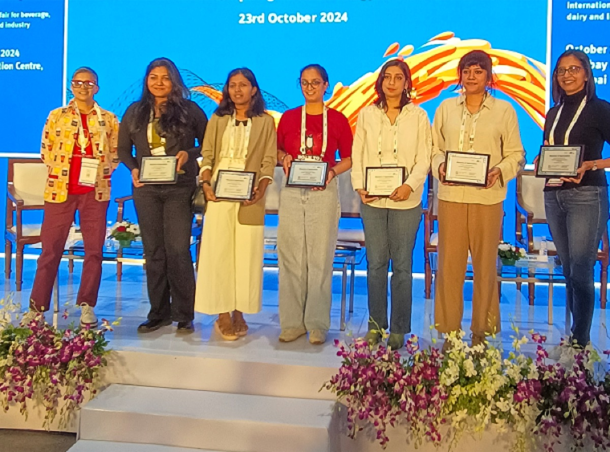

वरिष्ठ मेन्टर · Master Brewer
A.V. Ganesh Ramu
हाम्रा सबैभन्दा वरिष्ठ मेन्टर। Institute of Brewing and Distilling बाट Master Brewer, जर्मनी, बेलायत, न्युजिल्यान्ड, सिंगापुर र भारतमा brewing को 38 वर्षको अनुभवसहित।
Best on a laptop or desktop: the maps, filters and tables have more room there.
हामी Craft Beer School हौं, भारतको भरपर्दो बियर स्कूल, अनलाइन र प्रत्यक्ष दुवै। हामी बोतलभित्र र बाहिरका सबै कुरा सिकाउँछौं: सामग्री र ब्रुइङदेखि टेस्टिङ, ब्रान्डिङ र बियरको व्यवसायसम्म।
हाम्रो सिकाइ लाइभ सेसन, मार्गदर्शनसहितको टेस्टिङ र हातैले गर्ने ब्रुअरी कार्यशालामार्फत grain देखि glass र त्यसभन्दा पर पुग्छ। हामी WSET र Cicerone प्रमाणपत्र परीक्षाको तयारीमा पनि साथ दिन्छौं, जसले तपाईंलाई विश्वस्तरको बियर ज्ञान र उद्योगमा साँचो आत्मविश्वास बनाउन मद्दत गर्छ।
हाम्रा कोर्स भारत र संसारभरका बियर प्रेमी, पेसाकर्मी र भावी ब्रुअरी संस्थापकका लागि खुला छन्। लचिलो अनलाइन सत्र र जहाँ पनि काम लाग्ने व्यावहारिक ज्ञानमार्फत उद्योगका विज्ञहरूबाट सिक्नुहोस्।

साना cohort, ताकि हरेक प्रश्नको उत्तर मिलोस् र हरेक batch चाखियोस्।
भारतमा ब्रान्ड बनाइसकेका, काम गरिरहेका ब्रुअर, sensory विज्ञ र संस्थापकहरूबाट सिधै सिक्नुहोस्।
जुनसुकै सहरबाट जोडिन मिल्ने लचिलो लाइभ अनलाइन सेसन, साथै प्रत्यक्ष ब्रुअरी दिनहरू।
व्यवस्थित WSET र Cicerone परीक्षा तयारी, ताकि तपाईंको ज्ञान कक्षाकोठाभन्दा बाहिर पनि काम लागोस्।
शौखलाई करियर वा व्यवसायमा बदल्न बनाइएका पाठ्यक्रम।
निर्देशित tasting र साँच्चैको brewery दिनहरू, अन्नदेखि गिलाससम्म, आमनेसामने।
हाम्रा सबैभन्दा वरिष्ठ मेन्टर। Institute of Brewing and Distilling बाट Master Brewer, जर्मनी, बेलायत, न्युजिल्यान्ड, सिंगापुर र भारतमा brewing को 38 वर्षको अनुभवसहित।
United Breweries, SABMiller र AB InBev को R&D मा काम गरेका Master Brewer, जसले पछि AB InBev का विश्वव्यापी बिजनेस युनिटका लागि डाटा साइन्टिस्टको रूपमा AI र GenAI बनाए।
विज्ञापनमा 30+ वर्ष र craft beer प्रति गहिरो लगाव। हरेक सत्रमा बियरका कथा, ब्रान्डिङ र व्यवसाय ल्याउनुहुन्छ।
सामाजिक उत्तरदायित्व, शिक्षा र सञ्चालनमा 15+ वर्ष, अन्नदेखि गिलाससम्म हरेक समूहलाई सहज रूपमा चलाउँदै।
TU म्युनिखको Weihenstephan मा तालिम पाएका German-style Brewmaster, Food Biotechnology मा M.Tech. सहित। JW Marriott चण्डीगढ र भारतको पहिलो जर्मन brewery Rockmann Beer Island का लागि Consultant Brew Master का रूपमा एक दशक, सुरुवात र excise देखि yield र sourcing सम्म।
WSET र Cicerone का Beer Educator, accredited National Beer Judge (राष्ट्रिय बियर जज) र British Guild of Beer Writers का सदस्य। उहाँ एसिया र Greater China भरि बियर शिक्षाको स्तर उकास्ने काम गर्नुहुन्छ।
कोर्स छान्नुहोस्, tasting बुक गर्नुहोस्, वा हामीलाई जे पनि सोध्नुहोस्।
हामीसँग कुरा गर्नुहोस्